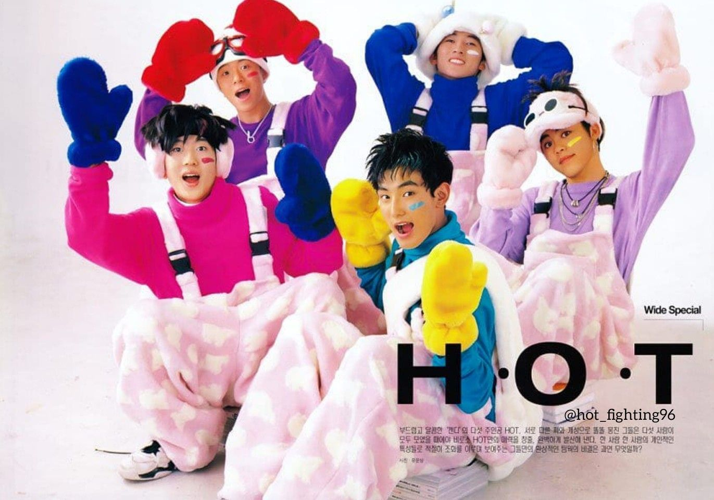
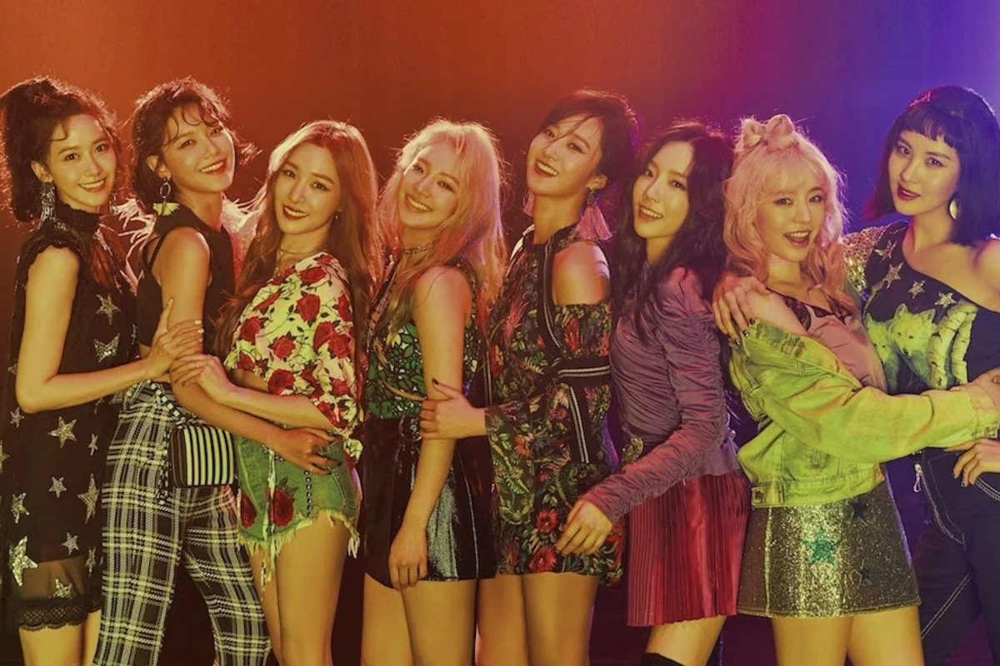
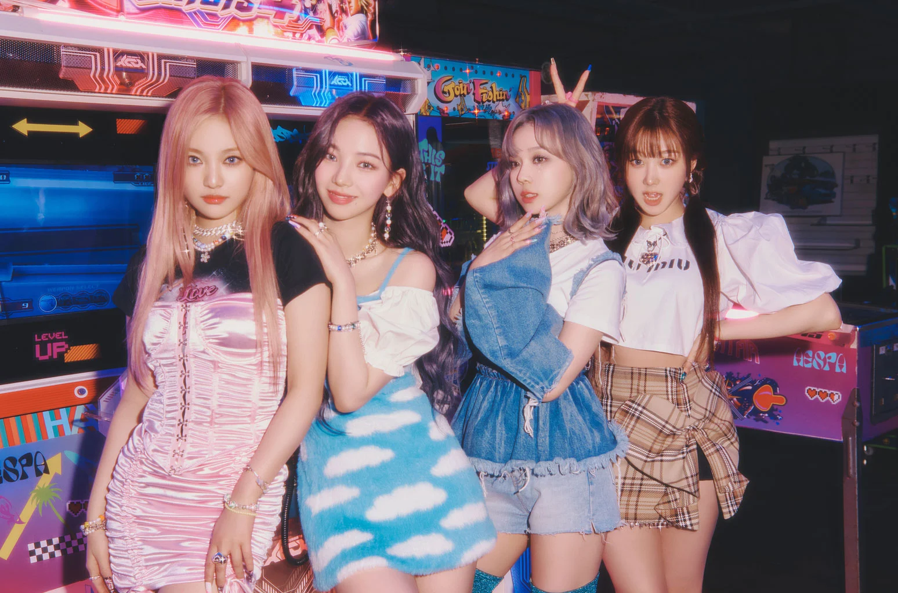

History of K-Pop
1st Gen
First Generation K-pop groups are those that were formed from 1990 until the early 2000's. This generation marked the birth if K-pop idol groups. Some pioneering groups of this generation are S.E.S, Sech Kies, Turbo, G.O.D, Rain, BoA, H.O.T (shown in picture) and many more. The reigning aesthetic during this generation revolved mostly around pop and hip-hop. They are the ones that paved the way for future artist and helped start the K-Pop craze that we have today.
2nd Gen
Second Generation K-Pop are groups that were formed from 2003 until around 2009 - 2010. Although the previous generation started everything, the Second Generation make K-Pop more known domestically and internationally. Some well-known groups from this generation are TVXQ, Big Bang, Girl's Generation (shown in picture), 2ne1, Epik High, and more. This was when ballads and mellow love songs also started to become popular. Even with slow melodies, they always incorporated intricate choreo which is a crucial part of the industry.
3rd Gen

Third Generation K-Pop started in around 2011 and ended in early 2018. K-pop at this point has become more creative, expressive, and brave when it comes to the message of their lyrics. The music also became more modern with combinations of different genres like techno, rock, pop, and ballad. During this generation, companies also started to add different ethnicities within the groups. Some well-known groups from this generation are EXO, BTS, iKON, Red Velvet, Twice, and Blackpink (shown in picture).
4th Gen
Fourth Generation K-Pop started in 2018 and is currently this generation. Currently, K-Pop has spread throughout the world and is well known by many. Groups that are formed during this generation are more focused on worldwide success. They follow that path and standard that was set by the previous generations and try to build on it. Some well-known groups from this current generation are Itzy, (G)I-DLE, Enhypen, TXT, LOONA, and aespa (shown in the picture).